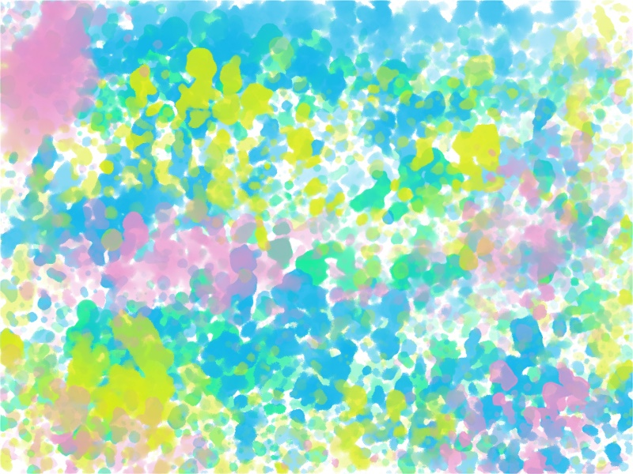

分離不安。
日記夫が出張に行くとき。
不安でしょうがない。行かないで。寂しい。どうしたらいいの。不安だよ。
気分の波が平坦な時は大丈夫だったのに、鬱期に入って不安が増してしまう。
家の中でも姿が見えないと不安になって探し回る。
相手にとっては「トイレに行くだけだよ」それでも。
昔から不安症状は強かった。生活に支障があるくらい。
抗不安薬を飲んでしのぐ。
頓服で飲んでいたロラゼパムを一日3回+頓服分で処方してもらった。
自分に自信がない、愛情の確認がしたい、安心したい。みんな繋がってること。
安心したい。